7 State Space Model (S.S.M.)
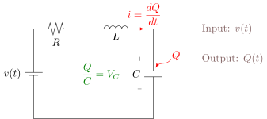
\[\begin{align*} \mathrm{KVL:}\quad v(t)\, &\color{black}= R \cdot \dot{Q}(t) + L \cdot \ddot{Q}(t) + \frac{Q(t)}{C} \\ \color{red} \mathrm{L.T.:} \quad V(s)\, &\color{red}= sRQ(s) + s^2LQ(s) + \frac{1}{C} \cdot Q(s) \\ &\color{red}= \left(s^2L+sR+\frac{1}{C}\right) Q(s) \\ \mathrm{T.F.} = \color{red} \frac{Q(s)}{V(s)} \,&\color{red}= \frac{1}{s^2L+sR+\frac{1}{C}} \qquad \color{black} \mathrm{S.I.S.O.} \end{align*}\]
Why do we need S.S.M.?
- Modern control theory. M.I.M.O.
- Relationship among state variables internal behavior.
\(\begin{cases}\color{red}\underline{\color{black}\dot{X} = \color{Salmon}\boxed{\color{black}A}\color{black} X + BU} \color{Salmon}\longrightarrow \\ Y = CX+DU\end{cases} \color{Salmon} \begin{bmatrix}\dot{x}_1\\\dot{x}_2\\\vdots\\\dot{x}_n\end{bmatrix} = \begin{bmatrix}\\[2ex]\quad n \times n \quad\\[2ex]\,\end{bmatrix} \begin{bmatrix}x_1\\x_2\\\vdots\\x_n\end{bmatrix} + BU\)
S.S.M. is a set of 1st-order D.E.’s.
Why do we use 1st-order D.E. to represent system dynamics?
- 1st-order D.E. is easier to be solved.
- The future states are totally dependent on present states.
E.g. Kinematics.
\[\begin{align*} \dot{d} = V \color{red}{=1\,m/s} \quad \color{RedOrange} d(t) \,&\color{RedOrange}= d(0) + V \cdot t\\ &\color{red}= d(0) + t \\ \hline \ddot{d} = a \color{red}{=1\,m/s^2} \quad \color{RedOrange} \dot{d}(t) \,&\color{RedOrange}= \dot{d}(0) + a \cdot t\\ d(t) &= d(0) + \dot{d}(0) \cdot t + \frac{1}{2}at^2 \end{align*}\]
\[\int \ddot{Q} \,dt = \dot{Q}(t) + \dot{Q}(0)\] \[\underline{\int \dot{Q} \,dt = Q(t) + Q(0)}\]
How do we choose state variables?
choose \(x_1 = Q\), \(x_2=\dot{Q}\).
\[\begin{cases}\dot{x}_1 = x_2 \\ \color{Salmon}\underline{\color{black}\dot{x}_2 = \displaystyle -\frac{1}{LC} \cdot x_1 - \frac{R}{L} \cdot x_2 + \frac{1}{L} \cdot v(t)}\end{cases}\]
\[\begin{align*} \color{Salmon} \mathrm{KVL:} \quad v(t) \,&\color{Salmon}= R \cdot \dot{Q}(t) + L \cdot \ddot{Q}(t) + \frac{1}{C} \cdot Q(t) \\ \color{Salmon} \ddot{Q}(t) \,&\color{Salmon}= -\frac{1}{LC} \cdot Q(t) - \frac{R}{L} \cdot \dot{Q}(t) + \frac{1}{L} \cdot v(t) \end{align*}\]
\[\color{violet}{\mathrm{S.S.M.:}} \color{black} \begin{cases} \begin{bmatrix}\dot{x}_1\\\dot{x}_2\end{bmatrix} = \color{red}\underset{A}{\underbrace{\color{black}\begin{bmatrix}0 & 1 \\ -\displaystyle\frac{1}{LC} & -\displaystyle\frac{R}{L}\end{bmatrix}}} \color{black} \begin{bmatrix}x_1\\x_2\end{bmatrix} + \color{red}\underset{B}{\underbrace{\color{black}\begin{bmatrix}0 \\ \displaystyle\frac{1}{L}\end{bmatrix}}} \\ y = \color{red}\underset{C}{\underbrace{\color{black}\begin{bmatrix}1 & 0\end{bmatrix}}} \color{black} \begin{bmatrix}x_1\\x_2\end{bmatrix} + \color{red}\underset{D}{\underbrace{\color{black}\begin{bmatrix}0\end{bmatrix}}} \color{black} \begin{bmatrix}v(t)\end{bmatrix} \end{cases}\]
\[\dot{X} = AX+BU\]
\[\begin{align*} \mathrm{L.T.:} \qquad\qquad sX(s) &= AX(s) + BU(s) \\ (sI-A) X(s) &= BU(s) \\ X(s) &= (sI-A)^{-1} BU(s) \end{align*}\]
Put into output equation:
\[\begin{align*} Y(s) &= C \cdot (sI-A)^{-1} BU(s) \\ &= \underset{\color{red}\checkmark}{C} \cdot \frac{(sI-A)^{\ast}}{\lvert sI-A \rvert} \cdot \underset{\color{red}\checkmark}{B} \cdot \underset{\color{red}V(s)}{\underset{\color{red}\checkmark}{U(s)}} \end{align*}\]
\[sI - A = \begin{bmatrix} s & 0 \\ 0 & s \end{bmatrix} - \begin{bmatrix} 0 & 1 \\ -\displaystyle\frac{1}{LC} & -\displaystyle\frac{R}{L} \end{bmatrix} = \begin{bmatrix} s & -1 \\ \displaystyle\frac{1}{LC} & s+\displaystyle\frac{R}{L} \end{bmatrix}\]
\[(sI - A)^{\ast} = \begin{bmatrix} s+\displaystyle\frac{R}{L} & 1 \\ -\displaystyle\frac{1}{LC} & s \end{bmatrix}\]
\[\color{red}\underline{\color{green}\lvert sI-A \rvert} \color{green} = s\left(s+\frac{R}{L}\right) + \frac{1}{LC} = \color{red}\underline{\color{green} s^2 + \frac{R}{L} s + \frac{1}{LC}}\]
\[\begin{align*} Y(s) &= \frac{1}{\displaystyle s^2+\frac{R}{L}s + \frac{1}{LC}} \cdot \begin{bmatrix} 1 & 0 \end{bmatrix} \begin{bmatrix} s+\displaystyle\frac{R}{L} & 1 \\ -\displaystyle\frac{1}{LC} & s \end{bmatrix} \begin{bmatrix} 0 \\ \displaystyle\frac{1}{L} \end{bmatrix} U(s) \\ &= \frac{\displaystyle\frac{1}{L} \cdot U(s)}{\displaystyle s^2+\frac{R}{L}s + \frac{1}{LC}} \\ &= \frac{U(s)}{\displaystyle Ls^2 + Rs + \frac{1}{C}} \end{align*}\]
\(\lvert sI-A \rvert = 0\) has the solutions exactly the same as the poles of T.F.
also the same as eigenvalues of matrix A
\[\color{violet} A \to \text{poles of T.F.} \to \text{system characteristics}\]
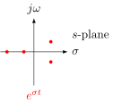
7.1 Eigenvalues and Eigenvectors - 06/17
Eigenvalues of \(A \quad \longrightarrow \quad\) system stability
\[\begin{align*} \color{green}{A} \color{black}\vec{v} &= \color{green}{\lambda} \color{black}\vec{v} \\ \color{green}\swarrow \quad & \qquad \color{green}\searrow \\ \color{green}\text{linear transformation} & \qquad \color{green}\text{scaling factor} \end{align*}\]
E.g. \(\quad A = \color{YellowOrange}\underset{\text{transformation}}{\underset{\text{2-D linear}}{\underbrace{\color{black}\begin{bmatrix}1&1\\4&-2\end{bmatrix}}}} \color{black}\quad \vec{v}_1 = \color{YellowOrange}\underset{\text{vector}}{\underset{\text{2-D}}{\underbrace{\color{black}\begin{bmatrix}1\\2\end{bmatrix}}}} \begin{array}{l}\color{red}x\\\color{red}y\end{array}\)
\[A \, \begin{bmatrix}x\\y\end{bmatrix} = \begin{cases} 1 \cdot \color{red} x \color{black} + 1 \cdot \color{red} y \color{black} = c_1 \qquad 1 \times 1 + 1 \times 2 = 3 \\ 4 \cdot \color{red} x \color{black} - 2 \cdot \color{red} y \color{black} = c_2 \qquad 4 \times 1 - 2 \times 2 = 0 \end{cases}\]
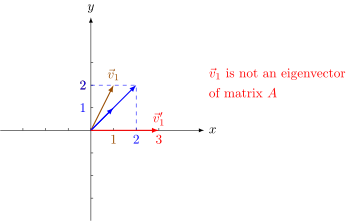
\[\color{red}\underset{A}{\underbrace{\color{green}\begin{bmatrix}1&1\\4&-2\end{bmatrix}}}\, \color{red}\underset{\vec{v}}{\underbrace{\color{green}\begin{bmatrix}1\\1\end{bmatrix}}} \color{green} = \begin{bmatrix}2\\2\end{bmatrix} \color{blue} = \color{red}\underset{\lambda}{\underset{\uparrow}{\color{blue} 2}} \color{blue} \,\cdot \color{red}\underset{\vec{v}}{\underbrace{\color{blue}\begin{bmatrix}1\\1\end{bmatrix}}}\]
\(\vec{v}=\begin{bmatrix}1\\1\end{bmatrix}\) is an eigenvector of \(A\), \(\lambda=2\) is an eigenvalue of \(A\).
With a given matrix \(A\), how to calculate its eigenvalue?
\[A \vec{v} = \lambda \vec{v}\]
\[(\lambda I - A) \vec{v} = 0\]
\[ \color{YellowOrange}\underline{\color{black} \lvert \lambda I - A \rvert = 0 \text{ for a non=zero } \vec{v}.}\]
Prove: \(\quad \vec{v} = \begin{bmatrix}v_x\\v_y\end{bmatrix} \quad\) assume \((\lambda I - A) = \begin{bmatrix}a&b\\c&d\end{bmatrix}\)
then we have \(\begin{bmatrix}a&b\\c&d\end{bmatrix} \begin{bmatrix}v_x\\v_y\end{bmatrix} = \begin{bmatrix}0\\0\end{bmatrix}\)
\(\begin{cases}a \cdot v_x + b \cdot v_y = 0 \\ c \cdot v_x + d \cdot v_y = 0 \end{cases} \implies \begin{cases}\displaystyle\frac{v_x}{v_y} = -\frac{b}{a} \\ \displaystyle\frac{v_x}{v_y} = -\frac{d}{c} \end{cases}\)
then \(\displaystyle\frac{b}{a} = \frac{d}{c} \implies ad-bc=0\)
\(\left\lvert\begin{array}{cc}a&b\\c&d\end{array}\right\rvert = \det \begin{bmatrix}a&b\\c&d\end{bmatrix} = \lvert \lambda I - A\rvert\)
E.g. \(\quad A = \begin{bmatrix}1&1\\4&-2\end{bmatrix}\)
\[\begin{align*} (\lambda I - A) &= \begin{bmatrix}\lambda&0\\0&\lambda\end{bmatrix} - \begin{bmatrix}1&1\\4&-2\end{bmatrix} \\ &= \begin{bmatrix}\lambda-1 & -1 \\ -4 & \lambda+2\end{bmatrix} \\ \lvert \lambda I - A \rvert &= (\lambda-1)(\lambda+2) - 4 \\ &= \lambda^2 + \lambda - 2-4 \\ &= \lambda^2 + \lambda - 6 \color{YellowOrange} = 0 \end{align*}\]
\[\color{YellowOrange} (\lambda+3)(\lambda-2) = 0\]
\[\color{YellowOrange} \lambda_1 = 2, \quad \lambda_2 = -3\]
- Put \(\color{red}\underline{\underline{\color{black}\lambda_1=2}}\) into \((\lambda I - A) \cdot \vec{v} = 0\)
\[\begin{bmatrix}1&-1\\-4&4\end{bmatrix} \begin{bmatrix}v_x\\v_y\end{bmatrix} = \begin{bmatrix}0\\0\end{bmatrix}\]
\[\begin{cases}v_x - v_y = 0 \\ -4v_x + 4v_y = 0 \end{cases} \qquad \color{red}\underline{\underline{\color{black}\begin{bmatrix}1\\1\end{bmatrix}}} \quad \color{red}\underline{\underline{\color{black}\begin{bmatrix}2\\2\end{bmatrix}}} \quad \color{black} \cdots\]- Put \(\color{red}\underline{\underline{\color{black}\lambda_2=-3}}\) into \(\dots\) \[ \begin{bmatrix}-4&-1\\-4&-1\end{bmatrix} \begin{bmatrix}v_x\\v_y\end{bmatrix} = \begin{bmatrix}0\\0\end{bmatrix} \qquad \color{red}\underline{\underline{\color{black}\begin{bmatrix}1\\-4\end{bmatrix}}}\]
eigenvalues of \(A\quad\longrightarrow\quad\) poles of T.F. \(\quad\longrightarrow\quad c_1\cdot e^{\lambda_1 t} + c_2\cdot e^{\lambda_2 t}\)
Phase portrait
Side notes for Transition matrix \(P\)
Assume \(\quad P = \begin{bmatrix}\vec{v}_1 & \vec{v}_2\end{bmatrix} = \begin{bmatrix}v_{1x} & v_{2x} \\ v_{1y} & v_{2y}\end{bmatrix}\)
\[\begin{align*} AP &= A \begin{bmatrix}v_{1x} & v_{2x} \\ v_{1y} & v_{2y}\end{bmatrix} = \begin{bmatrix}A \begin{bmatrix}v_{1x}\\v_{1y}\end{bmatrix} & A \begin{bmatrix}v_{2x}\\v_{2y}\end{bmatrix}\end{bmatrix} \\ &= \begin{bmatrix}\lambda \begin{bmatrix}v_{1x}\\v_{1y}\end{bmatrix} & \lambda \begin{bmatrix}v_{2x}\\v_{2y}\end{bmatrix}\end{bmatrix} \\ &= \begin{bmatrix}\lambda_1 v_{1x} & \lambda_2 v_{2x} \\ \lambda_1 v_{1y} & \lambda_2 v_{2y}\end{bmatrix} \\ &= \begin{bmatrix}v_{1x} & v_{2x} \\ v_{1y} & v_{2y}\end{bmatrix} \color{red}\underset{\Lambda}{\underbrace{\color{green}\begin{bmatrix}\lambda_1 & 0 \\ 0 & \lambda_2\end{bmatrix}}} \\ &= P \cdot \Lambda \end{align*}\]
for \(\dot{X} = AX\), assume \(X = P \cdot Z\)
then we have \(\dot{X} = \color{blue}\underline{\underline{\color{green}P \dot{Z}}} \color{green} = APZ = \color{blue}\underline{\underline{\color{green}P \Lambda Z}}\)
\(\qquad\qquad \color{blue}\qquad \dot{Z} = \Lambda Z\)
\(\begin{cases}\dot{x} = ax_1+bx_2 \\ \dot{x}_2 = cx_1 + dx_2\end{cases} \implies \begin{cases}\dot{z}_1 = \lambda_1 z_1 \\ \dot{z}_2 = \lambda_2 z_2\end{cases}\)
7.2 Phase Portrait
1-D:\(\quad\)
\[\begin{align*} \dot{x} = x & \color{YellowOrange} \implies x=e^{t} \\ \frac{dx(t)}{dt} = x(t) & \implies x(t) = e^{t} \quad \end{align*}\]
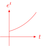
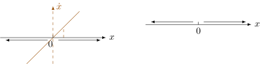
- Find equilibrium point: \(\dot{x} = 0 \implies x = 0\)
- when \(x>0\), \(\dot{x}>0\), \(\color{blue} x \uparrow\)
when \(x<0\), \(\dot{x}<0\), \(\color{blue} x \downarrow\)
unstable. \(\underline{\lambda=1}.\)2-D:\(\quad\)
\[\begin{align*} & \color{black} \begin{bmatrix}\dot{x}_1\\\dot{x}_2\end{bmatrix} = \begin{bmatrix}a&b\\c&d\end{bmatrix} \begin{bmatrix}x_1\\x_2\end{bmatrix} \\ \implies & \begin{bmatrix}\dot{z}_1\\\dot{z}_2\end{bmatrix} = \begin{bmatrix}\lambda_1 & 0 \\ 0 & \lambda_2\end{bmatrix} \begin{bmatrix}z_1\\z_2\end{bmatrix} \\ & \begin{cases} \dot{z}_1 = \lambda_1 z_1 \\ \dot{z}_2 = \lambda_2 z_2 \end{cases} \end{align*}\]
Case I: \(\lambda_1 > 0\), \(\lambda_2 > 0\).
Case II: \(\lambda_1 > 0\), \(\lambda_2 < 0\).
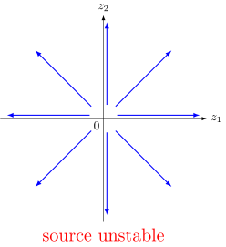
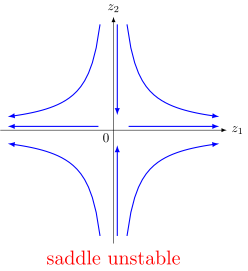
Case III: \(\lambda_1 < 0\), \(\lambda_2 < 0\).
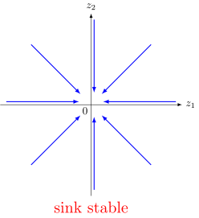
Now we have the system property of \(\dot{Z} = \Lambda Z\).
\[\begin{align*} X = PZ &= \begin{bmatrix}v_{1x} & v_{2x} \\ v_{1y} & v_{2y}\end{bmatrix} \begin{bmatrix}z_1\\z_2\end{bmatrix} \\ &= z_1 \color{YellowOrange}\underset{\vec{v}_1}{\underbrace{\color{black}\begin{bmatrix}v_{1x} \\ v_{1y}\end{bmatrix}}} \color{black} + z_2 \color{YellowOrange}\underset{\vec{v}_2}{\underbrace{\color{black}\begin{bmatrix}v_{2x} \\ v_{2y}\end{bmatrix}}} \end{align*}\]
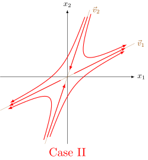
Conclusion: \(\dot{X} = AX\) has the same property as \(\dot{Z} = \Lambda Z\).
Summary:
| \(\lambda_1\), \(\lambda_2\) | |
|---|---|
| \(\lambda_1 < 0\), \(\lambda_2 < 0 \quad\) |
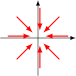 \(\quad\) stable |
| \(\lambda_1 > 0\), \(\lambda_2 < 0 \quad\) |
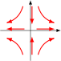 \(\quad\) saddle |
| \(\lambda_1 > 0\), \(\lambda_2 > 0 \quad\) |
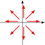 \(\quad\) unstable |
| \(\lambda_{1,2} = a \pm bi,\, a=0 \quad\) | \(\quad\) Lyapunov stability |
| \(\lambda_{1,2} = a \pm bi,\, a \gt 0 \quad\) |
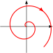 \(\quad\) unstable |
| \(\lambda_{1,2} = a \pm bi,\, a \lt 0 \quad\) |
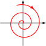 \(\quad\) asymptotically stable |